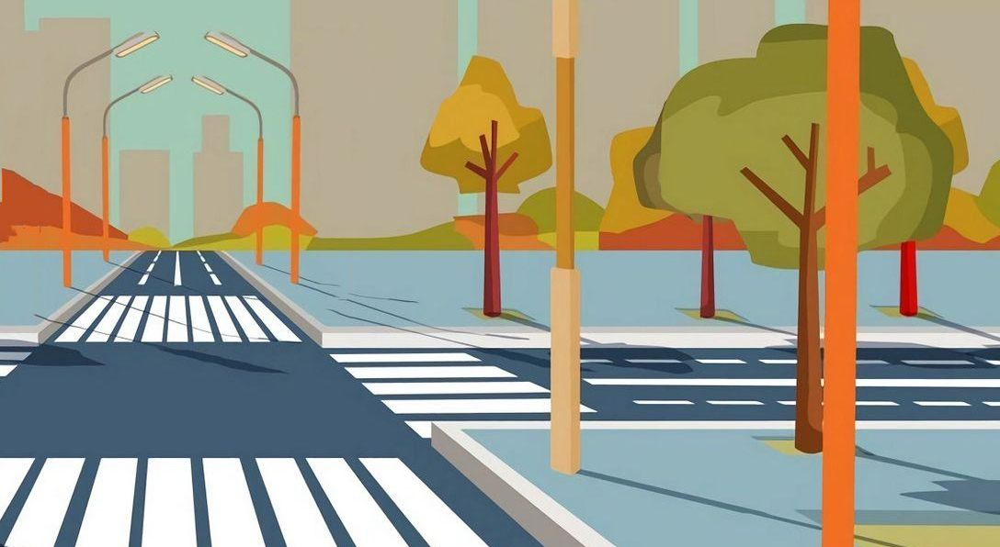

ПРАВИЛА
1) Подойди к краю дороги и остановись, чтобы убедиться, что дорога свободна.
2) Внимательно оцени ситуацию. Убедись, что все автомобили остановились.
3) Переходи дорогу, когда убедишься, что можно безопасно перейти. Смотри в обе стороны перед тем, как начать переход.
4) Не беги через дорогу! Ходи быстро, но не спеша.
ПРАВИЛА
1) Подойди к краю дороги и остановись. Убедись, что все автомобили остановились.
2) Смотри на светофор и следи за сигналами. Зеленый свет — можно идти, красный свет — жди.
3) Не беги и смотри в обе стороны!
4) Продолжай следить за автомобилями и светофором, даже когда начал переходить.